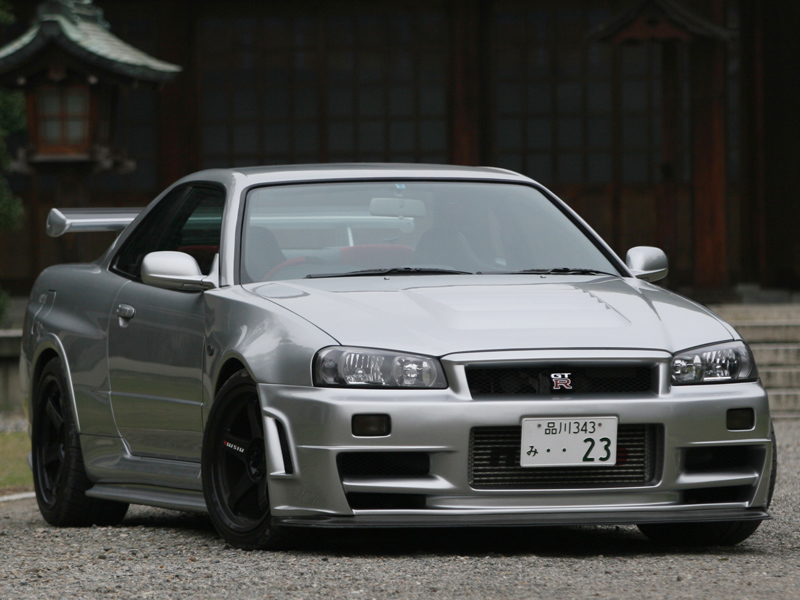

A HISTÓRIA DO NISSAN GTR
É um modelo de automóvel superesportivo produzido pela Nissan, foi anunciado em 2001 com o objectivo de dar sequência a marca GT-R (que surgiu na década de 1960 que fez sucesso com o Skyline), em 6 de Dezembro de 2007 foi oficialmente lançado no Japão, em 2008 chegou aos Estados Unidos, Canadá e Portugal, no resto do mundo apenas em 2009.
O modelo 2007 possui um motor 3.8 V6 Biturbo com potência de 480 Cv (362 kW) e 59.95Kgfm (588,0N.m.) de torque, acoplado a uma transmissão automatizada de 6 marchas com dupla embreagem e sistema de tração AWD ATTESA E-TS®, esse conjunto fornece desempenho capaz de levar os 1740 Kg de 0–100 km/h em 2.7s e tem velocidade máxima de 385 a 395 km/h.
O projeto do Nissan GT-R foi coordenado pelo engenheiro japonês Kazutoshi Mizuno, que no início do projeto já contava com mais de 40 anos de experiência, foi engenheiro focado em corridas, diretor de equipe e designer de carros. Kazutoshi juntamente com toda a equipe queria revolucionar o mercado de supercarros com algo que suprisse as necessidades dos clientes, para isso o carro precisava passar a marca de 300 km/h e não deveria custar mais de 100 mil dólares.

Para que isso fosse possível a Nissan optou por produzir o supercarro em massa na maior e mais tecnológica fábrica da Nissan, que fica situada em Tochigi no Japão, a técnica de montagem exige muito mais precisão por se tratar de um carro incomum, os únicos componentes montados à mão são o motor e o câmbio que são produzidos em lugares diferentes e posteriormente montados no GT-R em Tochigi.
O GT-R carrega a cultura japonesa desde seu projeto inicial, seu design foi inspirado nos robôs Gundam, o carro é oposto aos concorrentes europeus e americanos, o GT-R tem linhas fortes e robustas sugerindo baixa eficiência aerodinâmica, mas o'que acontece é justamente o contrário, com um coeficiente aerodinâmico de 0,26 o design GT-R é pensado e produzido para reduzir arrastos e vórtices ao máximo, além de empurrar o carro para baixo aumentando a aderência e segurança em altas velocidades.
O Skyline
O Skyline era originalmente um modelo da Prince Motor Company. Lançado em 1957, só se tornou um Nissan em 1966, quando a Prince foi comprada pela Nissan
Originalmente um modelo pacato, ganhou em 1969 a versão esportiva GT-R. Nas carrocerias sedã e cupê, trazia um motor 2.0 de seis cilindros em linha e 162 cv de potência, sendo um destaque para a época. Esse pioneiro ficou disponível até 1972, quando seguindo a atualização da linha Skyline o GT-R entrou em uma 2ª geração.
Foi só em 1989 que o Skyline voltou a ter a versão GT-R. Esta 3ª geração foi a verdadeira precursora do carro que conhecemos hoje. O R32 Skyline GT-R tinha tração nas quatro rodas e o famoso motor Nissan RB26DETT de seis cilindros em linha e dois turbos, que produzia 280 cv de potência. nissan skyline
Uma versão de corrida do R32 entrou no Campeonato Japonês de Carros de Turismo em 1989 e dominou a sua categoria nos anos seguintes. Esse feito fez, com que o GT-R virasse uma lenda mundial.
A 4ª e última geração do Skyline GT-R foi produzida entre 1999 e 2002. Sucesso na franquia Velozes e Furiosos, teve como versão mais extrema a Z-Tune, modificação feita pela própria fábrica em unidades usadas da versão R34, que ostentavam um motor 2.8 de seis cilindros em linha e 500 cv. Em 2002, a Nissan anunciou que o Skyline GT-R seria descontinuado, mas que a nomenclatura GT-R seria usada em um novo modelo superesportivo, que chegaria apenas em 2007.
No Brasil, o Nissan GT-R foi oferecido sob encomenda a partir de 2016, sendo equipado com uma versão de 572 cv do motor 3.8 V6. O modelo saiu do mercado automotivo brasileiro em 2021.